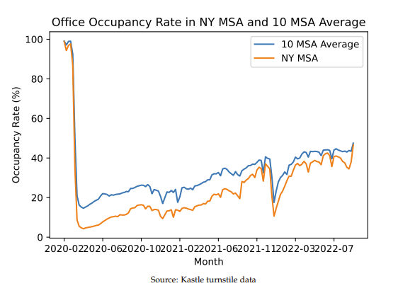

3
19.10.2022
COVID ve Kiralık Ofisler
ABD verilerine göre, COVID-19 pandemisi öncesine kıyasla:
Toplam Kiralanan M^2 Miktarı ⬇
Piyasadaki Tutulmuş Kiralık Ofis % ⬇
3 yıldan az sürecek kira sözleşmeleri % ⬆



Kaynak: WORK FROM HOME AND THE OFFICE REAL ESTATE APOCALYPSE, Gupta et al.,
https://www.nber.org/system/files/working_papers/w30526/w30526.pdf
2
03.10.2022
İSO: Eylül 2022 PMI skoru 46,9
Türkiye PMI® İmalat Sanayi Raporu - Üretim Endeksi
Üretiminiz bir ay önvesine göre nasıl değişti?

"Manşet gösterge; yeni siparişler, fabrika çıkışları, istihdam, tedarikçilerin
teslim süresi ve satın alma stokları gibi göstergelerden
elde edilmektedir. 50,0 değerinin üzerinde ölçülen tüm
rakamlar sektörde genel anlamda iyileşmeye işaret
etmektedir."
9 aylık aşağı yönlü PMI trendi, Eylül 2022'de de devam etti.
7 aydır eşik değer 50'nin altında kalan PMI, imalat sektöründeki aylara yayılan perfomans kaybının göstergelerinden biri.
Kaynak: https://www.iso.org.tr/projeler/iso-turkiye-imalat-pmi/,
Düzenlemeler: görselzeka.
1
29.09.2022
%48 daha az değerli Türk Lirası - Big Mac Endeksi, Haziran 2022

The Economist'in derlediği Haziran 2022 verilerine göre, McDonald's Big Mac'inin Türkiye'deki fiyatı 47.00 lira iken ABD'de ise 5.15 dolar.
47/5.15 = 9.13
Haziran 2022 döviz kuru ise 1 USD = 17.57 TRY
Böylelikle the Economist, Türk lirasının piyasada Big Mac endeksine kıyasla %48 daha az değerli addedildiğini öne sürüyor.